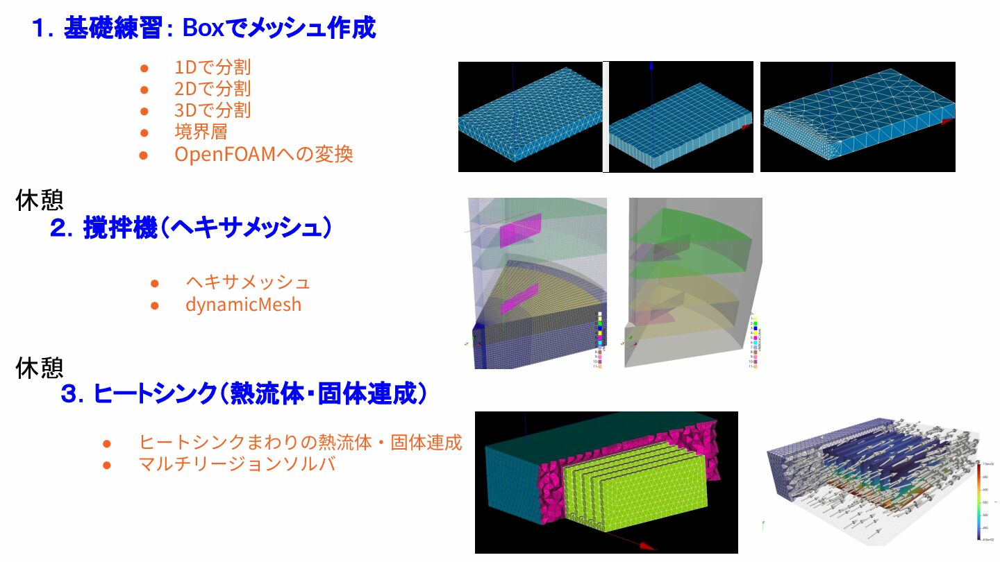

SALOME 9.15 を使って OpenFOAM 用のメッシュを作成する。
SALOMEには、プラットフォーム本体の SALOME と、構造解析ソルバCode_Asterを統合した Salome-Meca の2種類の配布形態がある（詳細は 000 SALOME を参照）。
| 名称 | 内容 | 配布元 |
|---|---|---|
| SALOME | プリ・ポスト処理プラットフォーム本体。ソルバは付属しない | https://www.salome-platform.org/ |
| Salome-Meca | SALOMEに構造解析ソルバ Code_Aster を統合したパッケージ | https://www.code-aster.org/ |
本講義ではソルバとしてOpenFOAMを使うため、Salome Platform配布の SALOME 9.15（ソルバなし版）を使用する。
インストール手順（Windows / Mac）は SALOMEのインストール を参照。
この講義では SALOME を使って OpenFOAM 用メッシュを作成するスキルを段階的に習得する。

各演習で使うSALOMEメッシュ（UNV）・OpenFOAMケース・計算結果は、リポジトリの
data/ フォルダにある。
| 演習 | データフォルダ |
|---|---|
| 001 Box | data/001_box/run001_of13（OpenFOAM
13）、data/001_box/run001_of2512（v2512） |
| 002 撹拌機 | data/002_Stirrer/sample/mesh/mesh_of13（メッシュ変換・バッフル作成）、data/002_Stirrer/sample/mesh/master_curve_of13（羽根可動化テスト）、data/002_Stirrer/sample/mesh/fullmodel_of13（全周フルモデル組み立て）。v2512版は各
〜_of2512 |
| 003 ヒートシンク | data/003_heatsink/run001_of13（OpenFOAM
13）、data/003_heatsink/run001_of2512（v2512） |
| ステップ | 演習 | 学ぶこと | ファイル |
|---|---|---|---|
| 0 | SALOME導入 | SALOME の概要・モジュール・OpenFOAM との連携 | 000 SALOME |
| 1 | 基礎練習（Box） | SALOME の基本操作・境界層・OpenFOAM 変換 | 001 Box |
| 2 | 撹拌機 | ヘキサメッシュで複雑形状を作成する方法 | 002 Stirrer |
| 3 | ヒートシンク | マルチリージョンメッシュ・熱流体固体連成 | 003 Heatsink |
到達目標